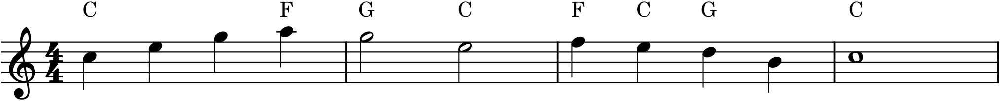

Part 2 taught you to read harmony — to name chords, recognize inversions, spot cadences and non-chord tones. This project turns that knowledge around: instead of analyzing harmony that already exists, you will create it, taking a bare melody and giving it four singing voices. This is the craft at the centre of the whole part, and it is exactly what the Preface promised Part 2 would do to the book’s running tune — harmonize it. So that is the melody we will use: the little phrase you first met on the very first pages.
The brief
Take a given melody and harmonize it in four-part (SATB) texture: choose a chord for each melodic moment, write a bass line, and fill in the two inner voices with clean voice leading — no parallel fifths or octaves, the leading tone resolved, and a proper cadence at the end. The result should be four independent lines that a small choir could sing. Save it, and keep it: in Part 3 this same tune gets an accompaniment, and in Part 7 an orchestra.
P2.1The melody
Our melody is the book’s running phrase — four bars in C major, the tune from the Preface, here written up an octave so it sits in a soprano’s range. Harmonizing proceeds in four unhurried steps: choose the chords, write the bass, fill the inner voices, then check and refine. Take them in order and a daunting task becomes four small ones. (You can, and should, later run your own melody from Project 1 through exactly the same steps.)
P2.2Step one — choose the chords
Before any four-part writing, decide what harmony the melody implies. Go through it and, for each note or group of notes, ask which chord it belongs to. A melody note is usually a chord tone, so it points at the chords that contain it: an E could be harmonized by C (I), by Am (vi), or by E-minor (iii), and you choose by what makes a good progression — leaning on the tonic, subdominant, and dominant functions from Chapter 12, and aiming for a strong cadence at the end.

The plan in Figure P2.1 is a complete harmonization already, at the lead-sheet level — enough for a guitarist. Notice the choices: the tune’s opening C–E–G is plainly the tonic; the A that follows wants a chord containing A, so F (IV); the descent in bar 3 is carried by IV–I–V; and the whole thing lands on a V–I so it ends like a sentence, not a fragment. Good harmonization is mostly good chord choice, and it starts here, before a single inner voice is written.
P2.3Step two — write the bass
With the chords chosen, write the bass line — the foundation and the second most important line after the melody. In the simplest approach the bass takes the root of each chord, giving the strongest, most stable version of the progression. But a bass of nothing but roots leaps around; this is exactly where inversions (Chapter 13) earn their place. Where two root-position chords would force an ugly leap, put one in first inversion so the bass can step instead. Aim for a bass line that is itself shapely — that you would not mind singing — using inversions to smooth its biggest jumps while keeping the roots at the important moments, especially the cadence.
P2.4Step three — fill the inner voices
Now the alto and tenor. With soprano and bass fixed, each inner voice needs, for every chord, whichever chord tone lets it move the least. Apply the voice-leading habits of Chapter 14 directly:
- hold common tones in the same voice from one chord to the next;
- move the other voices by step to the nearest chord tone;
- double the root of each chord (never the leading tone);
- and check constantly for the forbidden parallel fifths and octaves, fixing any by sending a voice the other way.
Done well, the inner voices barely move — a note here, a step there — while the outer voices carry the tune and the bass. Here is the melody’s closing cadence, fully realized in four parts:

The cadence in Figure P2.2 is a single link of the chain, shown complete so you can see the target: four independent lines, every rule from Chapter 14 satisfied, the leading tone rising home. Build the rest of the phrase to the same standard, chord by chord.
P2.5Step four — check, refine, and enliven
Play the whole thing back and listen. Then audit it the way Chapter 14 taught: isolate each voice and make sure it is a smooth, singable line; check the outer pair especially for parallels; confirm the leading tone resolves at the cadence. Fix what the ear or the rules flag.
Finally, if the texture feels stiff, bring it to life with non-chord tones (Chapter 16). A passing tone to fill a leap in the tenor, a suspension over the cadence to add an expressive ache — these are the difference between a correct exercise and music that breathes. Add them sparingly and on purpose.
Sing the inner voices
The test of a harmonization is not whether it looks right but whether each line sounds like a melody. Play the alto alone, then the tenor alone. If either lurches or leaps awkwardly, it needs work — a good inner voice is nearly boring to sing, moving mostly by step and holding common tones. The smoothness you hear in isolation is what makes the four voices lock together into one chord when sounded together.
P2.6Going further
Harmonize your own melody from Project 1 with the same four steps. Try a version in a minor key, remembering to raise the leading tone in the dominant (Chapter 12). And keep this file — the harmonized tune is the seed the rest of the book grows from.
Done when…
- Every melody note has a chord that fits it, and the progression makes functional sense, ending on a clear cadence.
- The piece is in genuine four-part texture — soprano, alto, tenor, bass, each an independent line.
- There are no parallel fifths or octaves, the leading tone resolves, and the root is doubled (not the leading tone).
- Each inner voice, played alone, is smooth and singable.
- The file is saved, and — if you added them — any non-chord tones are there on purpose, not by accident.